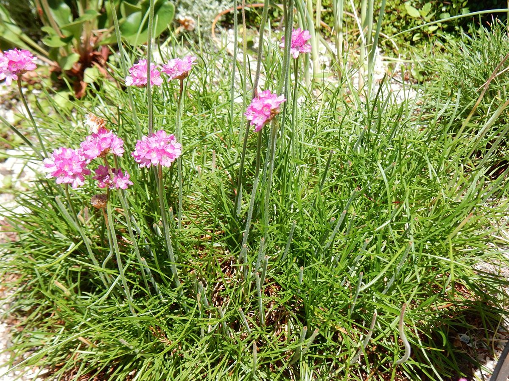

ベーカリー・焼き菓子 / 山口県宇部市
Armerieパンとお菓子アルメリア
山口県宇部市にあるベーカリー・焼き菓子のお店「Armerie パンとお菓子アルメリア」のご案内ページです。営業時間やメニューなどは準備中。まずはInstagramをのぞいてみてください。

制作側の連想
丸い頭と、まっすぐな茎。
これは制作側の連想で、お店の理念・由来とは無関係です。屋号の由来は分かりません。「アルメリア」という響きから、細くまっすぐな茎の先に、まんまるの花が1つずつのる姿を思い浮かべました。そこでこのサイトは、丸い写真を茎の先にのせた「花茎の並び」で作っています。
花茎の並び(イメージ)
茎の高さはばらばら、頭は丸く。
写真は国外・撮影地不明のフリー素材で、お店の商品ではありません。
 ひとつめ
ひとつめ ふたつめ
ふたつめ みっつめ
みっつめ よっつめ
よっつめ いつつめ
いつつめ むっつめ
むっつめ
ご案内
確認できていること
| 所在地 | 〒755-0029 山口県宇部市新天町2丁目3-15 |
|---|---|
| 電話 | なし |
| 営業時間 | 準備中 |
| 定休日 | 準備中 |
| ご予約 | 準備中 |
| 駐車場 | 準備中 |
| SNS | Instagram @pan_okasi_armerie |